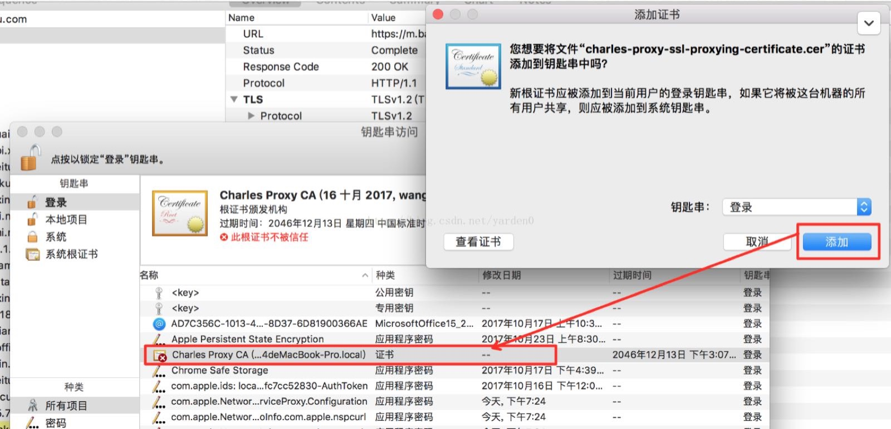
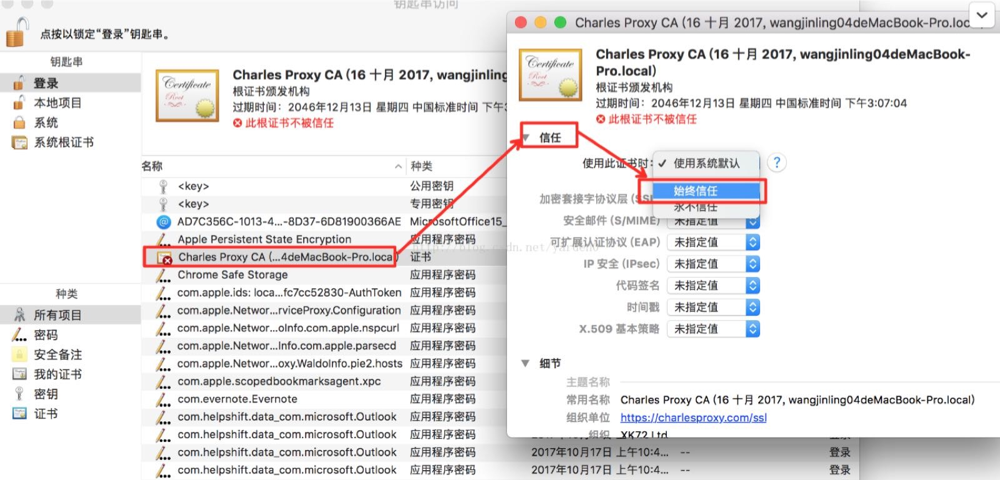

如何使用charles抓包H5页面内容原文出处:本文由博客园博主Jesse131提供。
原文连接:https://www.cnblogs.com/jesse131/p/12080004.html
安装charles
这里推荐直接去官网下载 https://www.charlesproxy.com/latest-release/download.do
根据自己的电脑选择合适的安装包，我这里选择macOS dmg格式安装包。安装好后直接运行，第一次是试用版
破解方法
考虑到自己经常使用这个抓包，就在网上搜了下破解方法
方法一：
Registered Name: https://zhile.io
License Key: 48891cf209c6d32bf4
直接用上面的注册码，点击help->register Charles 输入上面提供的注册码，输完确定后重新启动charles即可
方法二：
访问https://www.zzzmode.com/mytools/charles/ 根据页面提示完成操作
抓取http报文
想要抓取手机上H5页面可按照一下步骤：
- 将手机和电脑连接在同一个网络上，电脑和手机连接同一WIFI
- 在Mac上系统偏好设置->网络面板可查看到自己电脑的ip
- 在手机连接上同一WIFI后，修改网络，设置代理，填写服务器主机名为第2步中查看到的自己电脑的ip，服务器端口为8888，点击保存
- 此时在手机上访问的http协议页面在charles上都能看到网络请求
抓取https报文
想要抓取https报文，必先安装证书，如果是想抓取mac浏览器访问的https页面，mac得安装证书，同理如果是想抓取手机访问https页面，手机得安装证书
mac上证书安装
- 点击help -> SSL proxying -> install charles root certificate 密码授权
- 在弹出的添加证书窗口中，选择添加，可以看到在钥匙串访问窗口中，该证书已成功添加，但是此时该证书仍然不被信任

- 双击此证书，在弹出的Charles Proxy CA窗口中，点击信任按钮，使用此证书时，选择始终信任后关闭窗口，使用账号和密码授权后，即可看到此证书已经被信任了

此时mac上访问的https页面在charles上能看到网络请求了
手机上证书安装
- 手机和电脑连接同一网络后，用手机默认浏览器访问http://chls.pro/ssl 下载pem证书
- 安装证书，这里不同的手机安装证书方式不同，我这里已huawei手机为例 设置->安全和隐私 ->更多安全设置 -> 加密和凭据 -> 从存储设备安装 点击刚才下载的pem证书 即可安装完成。
此时手机上访问的https页面也可以在charles上看到网络请求了